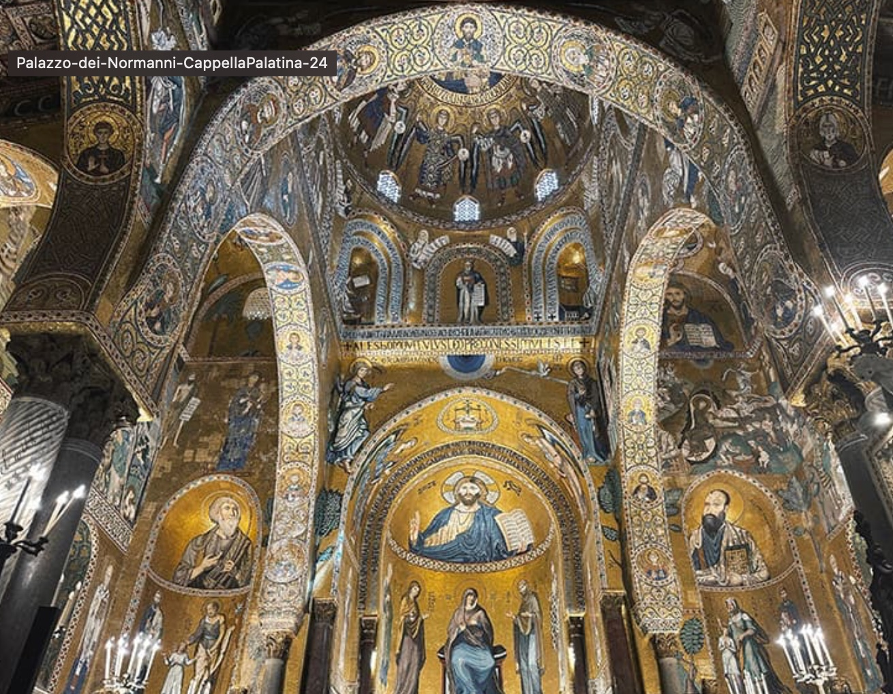
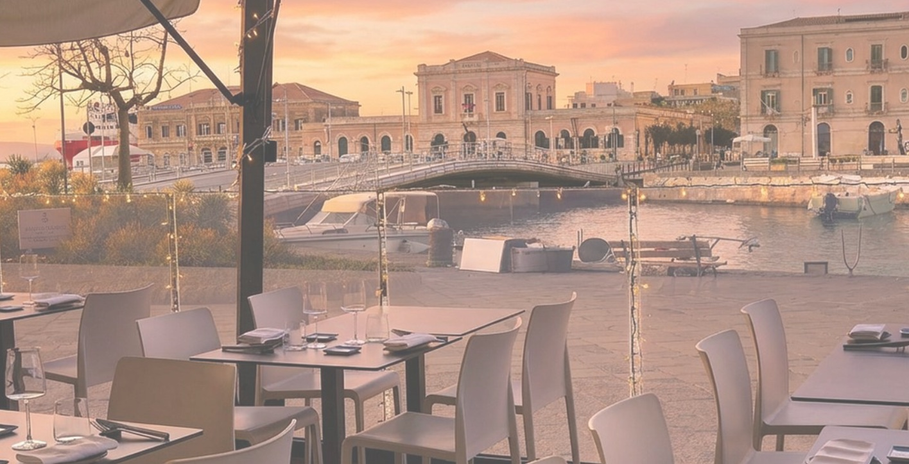
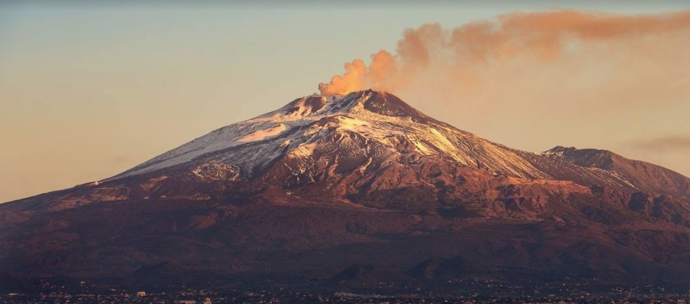
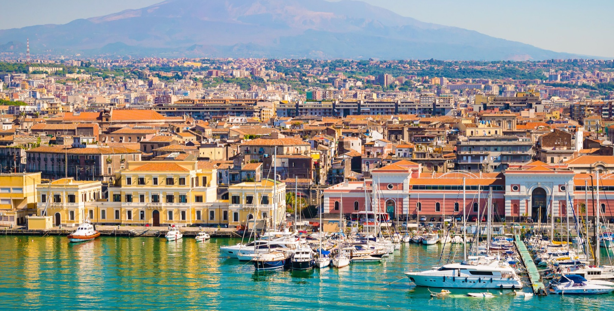
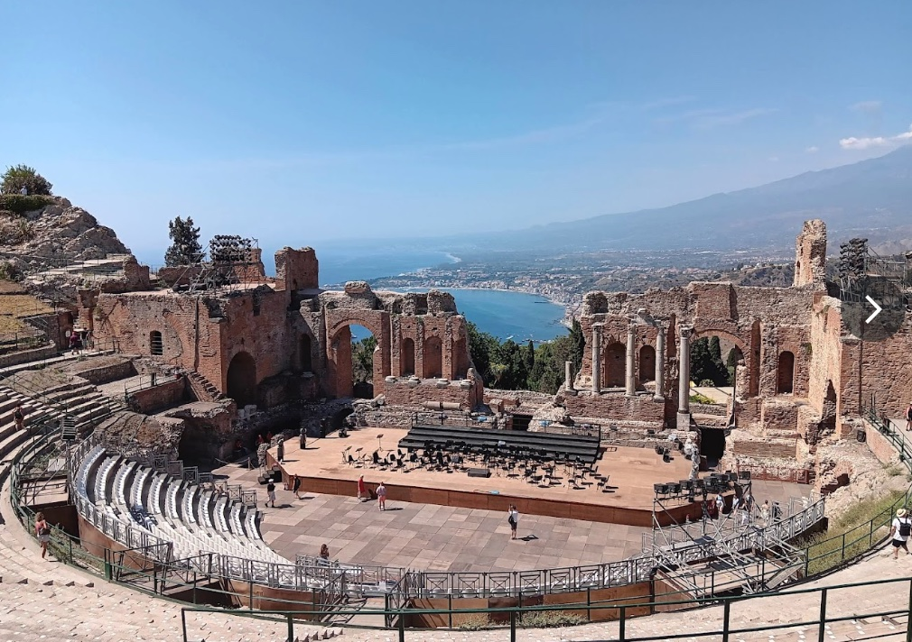

2.19
PALERMO
14:00巴勒莫机场取车
下午四角广场
过渡前往住宿 (Palazzo
Scavone)
重要提示
因主城区有限行，且机场到别墅较远，建议中途在菜市场吃个牛肚包填填肚子，回别墅放好行李再出来逛。没逛完的可以放到明天上午。
顺次诺曼王宫 & 大教堂
待上传: normanni.jpg

晚间马西莫剧院 & 晚餐
2.20
AGRIGENTO
08:30 - 11:30Ballarò
菜市场
14:30 - 16:30土耳其阶梯
待上传: scala.jpg

16:30 - 17:30神殿之谷
20:00 - 22:00锡拉库扎晚餐
待上传: dinner_siracusa.jpg

餐厅信息
目标餐厅: La Tavernetta Uno da
Simone。
注意：晚饭一般7点才开始。如果逛得太晚，可在阿格里真托吃完再走。
注意：晚饭一般7点才开始。如果逛得太晚，可在阿格里真托吃完再走。
2.21
SIRACUSA / NOTO
08:30 - 13:30锡拉库扎游玩
下午诺托 · 圣尼各老主教座堂
22:00宿: Matteotti
Luxury Residence
2.22
ETNA / CATANIA
08:00 - 10:00前往埃特纳
(途经卡塔尼亚)
重要安排
车程2小时。中途去卡塔尼亚吃早餐。如果运气好能买到上火山的票就趁早出发，否则在卡塔尼亚吃饱再上山。
10:30 - 14:00埃特纳火山
(Mount Etna)
待上传: etna.jpg

登山攻略
1. 官网: funiviaetna.com
2. 驾车至1900米 -> 缆车至2500米 (52欧/人) -> 4x4车继续向上 (需另购票)
3. 必须现场买票，需要穿厚衣服。
4. 如果当天不能上山，就下山去卡塔尼亚逛逛。
2. 驾车至1900米 -> 缆车至2500米 (52欧/人) -> 4x4车继续向上 (需另购票)
3. 必须现场买票，需要穿厚衣服。
4. 如果当天不能上山，就下山去卡塔尼亚逛逛。
19:00卡塔尼亚晚餐
待上传: catania.jpg

餐厅推荐
Osteria Antica Marina 或 鱼市场附近。
天黑前下山，有充裕时间吃晚饭。之后前往陶尔米纳住宿 (Via Cagli Corrado, 15)。
天黑前下山，有充裕时间吃晚饭。之后前往陶尔米纳住宿 (Via Cagli Corrado, 15)。
2.23
TAORMINA / DEPARTURE
06:30 - 07:30陶尔米纳希腊剧场
待上传: taormina.jpg

中午陶尔米纳午餐

13:30 - 17:00前往机场
返程提示
车程约3.5小时。请预留足够时间还车。